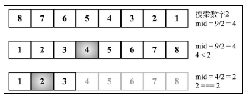
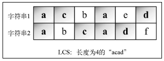
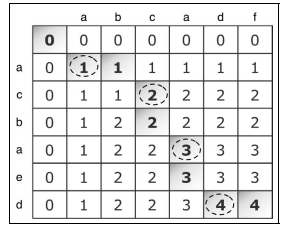
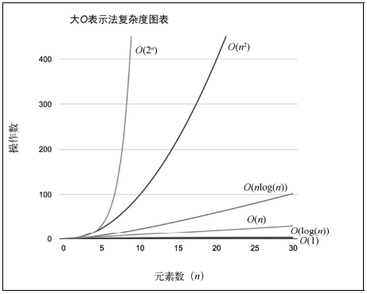
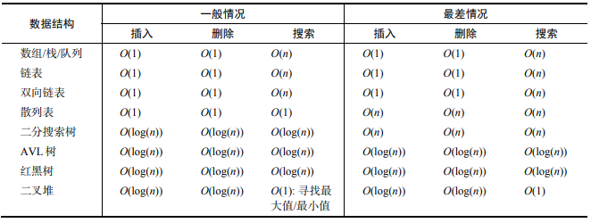
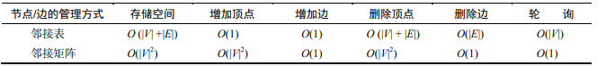
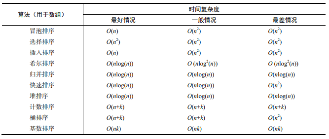
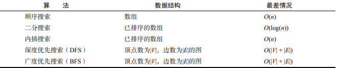
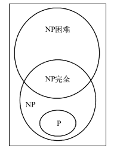

算法设计与技巧
分而治之
将一个问题分成多个和原问题相似的小问题，递归解决小问题，再将解决方式合并以解决原来的问题
分而治之算法可以分成三个部分。
(1) 分解原问题为多个子问题（原问题的多个小实例）。
(2) 解决子问题，用返回解决子问题的方式的递归算法。递归算法的基本情形可以用来解决子问题。
(3) 组合这些子问题的解决方式，得到原问题的解。
二分搜索
分解：计算 mid 并搜索数组较小或较大的一半。
解决：在较小或较大的一半中搜索值。
合并：这步不需要，因为我们直接返回了索引值。
1 | function binarySearchRecursive( |

动态规划
动态规划（dynamic programming，DP）是一种将复杂问题分解成更小的子问题来解决的优化技术。
注意，动态规划和分而治之是不同的方法。分而治之方法是把问题分解成相互独立的子问题，然后组合它们的答案，而动态规划则是将问题分解成相互依赖的子问题。
步骤：
(1) 定义子问题；
(2) 实现要反复执行来解决子问题的部分；
(3) 识别并求解出基线条件。
能用动态规划解决的一些著名问题如下。
(1)背包问题：给出一组项，各自有值和容量，目标是找出总值最大的项的集合。这个问题的限制是，总容量必须小于等于“背包”的容量。
(2)最长公共子序列：找出一组序列的最长公共子序列（可由另一序列删除元素但不改变余下元素的顺序而得到）。
(3)矩阵链相乘：给出一系列矩阵，目标是找到这些矩阵相乘的最高效办法（计算次数尽可能少）。相乘运算不会进行，解决方案是找到这些矩阵各自相乘的顺序。
(4)硬币找零：给出面额为 d1, …, dn 的一定数量的硬币和要找零的钱数，找出有多少种找零的方法。
(5)图的全源最短路径：对所有顶点对(u, v)，找出从顶点 u 到顶点 v 的最短路径。(Floyd-Warshall 算法)
最少硬币找零问题
最少硬币找零问题是硬币找零问题的一个变种。硬币找零问题是给出要找零的钱数，以及可用的硬币面额 d1, …, dn 及其数量，找出有多少种找零方法。最少硬币找零问题是给出要找零的钱数，以及可用的硬币面额 d1, …, dn 及其数量，找到所需的最少的硬币个数。
1 | // coins 硬币面额的数组 |
背包问题
背包问题是一个组合优化问题。它可以描述如下：给定一个固定大小、能够携重量 W 的背包，以及一组有价值和重量的物品，找出一个最佳解决方案，使得装入背包的物品总重量不超过 W，且总价值最大。
1 | function knapSack(capacity, weights, values, n) { |

最长公共子序列(LCS)
找出两个字符串序列的最长子序列的长度。最长子序列是指，在两个字符串序列中以相同顺序出现，但不要求连续（非字符串子串）的字符串序列。

1 | function lcs(wordX, wordY) { |

矩阵链相乘
要找出一组矩阵相乘的最佳方式（顺序）
ABC*D 的乘法
A 是一个 10 行 100 列的矩阵；
B 是一个 100 行 5 列的矩阵；
C 是一个 5 行 50 列的矩阵；
D 是一个 50 行 1 列的矩阵；
ABC*D 的结果是一个 10 行 1 列的矩阵
(1) (A(B(CD)))：乘法运算的次数是 1750 次。
(2) ((AB)(CD))：乘法运算的次数是 5300 次。
(3) (((AB)C)D)：乘法运算的次数是 8000 次。
(4) ((A(BC))D)：乘法运算的次数是 75 500 次。
(5) (A((BC)D))：乘法运算的次数是 31 000 次。
1 | function matrixChainOrder(p) { |
贪心算法
贪心算法遵循一种近似解决问题的技术，期盼通过每个阶段的局部最优选择（当前最好的解），从而达到全局的最优（全局最优解）。它不像动态规划算法那样计算更大的格局。
最少硬币找零问题
1 | function minCoinChange(coins, amount) { |

比起动态规划算法而言，贪心算法更简单、更快。然而，它并不总是得到最优答案。但是综合来看，它相对执行时间来说，输出了一个可以接受的解。
分数背包问题
1 | function knapSack(capacity, weights, values) { |
回溯算法
回溯是一种渐进式寻找并构建问题解决方式的策略。我们从一个可能的动作开始并试着用这个动作解决问题。如果不能解决，就回溯并选择另一个动作直到将问题解决。根据这种行为，回溯算法会尝试所有可能的动作（如果更快找到了解决办法就尝试较少的次数）来解决问题。
迷宫老鼠问题
1 | export function ratInAMaze(maze) { |
数独解题器
1 | function sudokuSolver(matrix) { |
函数式编程(FP)简介
函数式编程与命令式编程
1 | // 命令式编程 |
注意：
(1)函数式编程的主要目标是描述数据，以及要对数据应用的转换。
(2)在函数式编程中，程序执行顺序的重要性很低；而在命令式编程中，步骤和顺序是非常重要的。
(3)函数和数据集合是函数式编程的核心。
(4)在函数式编程中，我们可以使用和滥用函数和递归；而在命令式编程中，则使用循环、赋值、条件和函数。
(5)在函数式编程中，要避免副作用和可变数据，意味着我们不会修改传入函数的数据。如果需要基于输入返回一个解决方案，可以制作一个副本并返回数据修改后的副本。
JavaScript 函数式类库和数据结构
Underscode.js：http://underscorejs.org/
Bilby.js：http://bilby.brianmckenna.org/
Lazy.js：http://danieltao.com/lazy.js/
Bacon.js：https://baconjs.github.io/
Fn.js：http://eliperelman.com/fn.js/
Functional.js：http://functionaljs.com/
Ramda.js：http://ramdajs.com/0.20.1/index.html
Mori：http://swannodette.github.io/mori/
JavaScript 函数式编程：https://www.packtpub.com/web-development/functional-programming-javascript
算法复杂度
大 O 表示法
用于描述算法的性能和复杂程度。
大 O 表示法将算法按照消耗的时间进行分类，依据随输入增大所需要的空间/内存。
| 符 号 | 名 称 |
|---|---|
| O(1) | 常数的 |
| O(log(n)) | 对数的 |
| O((log(n))c) | 对数多项式的 |
| O(n) | 线性的 |
| O(n^2) | 二次的 |
| O(n^c) | 多项式的 |
| O(c^n) | 指数的 |
理解大 O 表示法
衡量算法的效率：通常是用资源，例如 CPU（时间）占用、内存占用、硬盘占用和网络占用。当讨论大 O 表示法时，一般考虑的是 CPU（时间）占用。
- O(1)
1 | function increment(num) { |
假设运行 increment(1)函数，执行时间等于 X。如果再用不同的参数（例如 2）运行一次 increment 函数，执行时间依然是 X。和参数无关，increment 函数的性能都一样。因此，我们说上述函数的复杂度是 O(1)（常数）
- O(n)
函数执行的总开销取决于数组元素的个数（数组大小），而且也和搜索的值有关。如果是查找数组中存在的值，查找运算执行次数由值的位置决定。如果查找的是数组中不存在的值，查找运算就会执行和数组大小一样多次，这就是通常所说的最坏情况。最坏情况下，如果数组大小是 10，开销就是 10；如果数组大小是 1000，开销就是 1000。可以得出 sequentialSearch 函数的时间复杂度是 O(n)，n 是（输入）数组的大小。
以顺序搜索算法为例
1 | function sequentialSearch(array, value, equalsFn = defaultEquals) { |
- O(n^2)
以冒泡排序为例
1 | function bubbleSort(array, compareFn = defaultCompare) { |
如果用大小为 10 的数组执行 bubbleSort，开销是 100（10^2）。如果用大小为 100 的数组执行bubbleSort，开销就是 10 000（100^2）。需要注意，我们每次增加输入的大小，执行都会越来越久
时间复杂度 O(n)的代码只有一层循环，而 O(n^2)的代码有双层嵌套循环。如果算法有三层迭代数组的嵌套循环，它的时间复杂度很可能就是 O(n^3)
时间复杂度比较
| 输入大小（n） | O(1) | O(log(n)) | O(n) | O(nlog(n)) | O(n^2) | O(2^n) |
|---|---|---|---|---|---|---|
| 10 | 1 | 1 | 10 | 10 | 100 | 1024 |
| 20 | 1 | 1.30 | 20 | 26.02 | 400 | 1 048 576 |
| 50 | 1 | 1.69 | 50 | 84.94 | 2500 | 非常大 |
| 100 | 1 | 2 | 100 | 200 | 10 000 | 非常大 |
| 500 | 1 | 2.69 | 500 | 1349.48 | 250 000 | 非常大 |
| 1000 | 1 | 3 | 1000 | 3000 | 1 000 000 | 非常大 |
| 10 000 | 1 | 4 | 10 000 | 40 000 | 100 000 000 | 非常大 |
不同的大 O 表示法的消耗

常用数据结构的时间复杂度

图的时间复杂度

排序算法的时间复杂度

搜索算法的时间复杂度

NP 完全理论概述
一般来说，如果一个算法的复杂度为 O(n^k)，其中 k 是常数，我们就认为这个算法是高效的，这就是多项式算法.
对于给定的问题，如果存在多项式算法，则计为 P（polynomial，多项式）
NP（nondeterministic polynomial，非确定性多项式）算法。如果一个问题可以在多项式时间内验证解是否正确，则计为 NP
如果一个问题存在多项式算法，自然可以在多项式时间内验证其解。因此，所有的 P 都是NP。然而，P = NP 是否成立，仍然不得而知。
NP 问题中最难的是 NP 完全问题。如果满足以下两个条件，则称决策问题 L 是 NP 完全的：
(1) L 是 NP 问题，也就是说，可以在多项式时间内验证解，但还没有找到多项式算法；
(2) 所有的 NP 问题都能在多项式时间内归约为 L。
为了理解问题的归约，考虑两个决策问题 L和 M。假设算法 A可以解决问题 L，算法 B可以验证输入 y是否为 M的解。目标是找到一个把 L转化为 M的方法，使得算法 B可以用于构造算法 A。
还有一类问题，只需满足 NP 完全问题的第二个条件，称为 NP 困难问题。因此，NP 完全问题也是 NP 困难问题的子集。
下面是满足 P<>NP 时，P、NP、NP 完全和 NP 困难问题的欧拉图。

非 NP 完全的 NP 困难问题的例子有停机问题和布尔可满足性问题（SAT）。
NP 完全问题的例子有子集和问题、旅行商问题、顶点覆盖问题，等等。
以上问题，具体可查看：https://en.wikipedia.org/wiki/NP-completeness
不可解问题与启发式算法
有些问题是不可解的。然而，仍然有办法在符合要求的时间内找到一个近似解。
启发式算法就是其中之一。启发式算法得到的未必是最优解，但足够解决问题了。
启发式算法的例子有局部搜索、遗传算法、启发式导航、机器学习等。
详情请查阅 https://en.wikipedia.org/wiki/Heuristic_(computer_science)
UVa Online Judge（http://uva.onlinejudge.org/）
Sphere Online Judge（http://www.spoj.com/）
Coderbyte（http://coderbyte.com/）
Project Euler（https://projecteuler.net/）
HackerRank（https://www.hackerrank.com）
CodeChef（http://www.codechef.com/）
Top Coder（http://www.topcoder.com/）
疑问点
尾调用优化
- 调用栈长
- 使用后性能有较大的提升
Floyd-Warshall 算法
Kruskal 算法
背包问题
最长公共子序列
矩阵链相乘
NP 完全理论 - 多项式时间
算法的使用，什么情况下用合适？需要将数据转换处理
合适
自己写的算法怎么验证正确性？
LeetCode或其他刷题网站
antd升级后的visible修改任务
评估修改时间
testing-library/react测试react组件的库，安装了却没用？
umc-ui的项目框架使用的是别的项目的，原来就有，没删